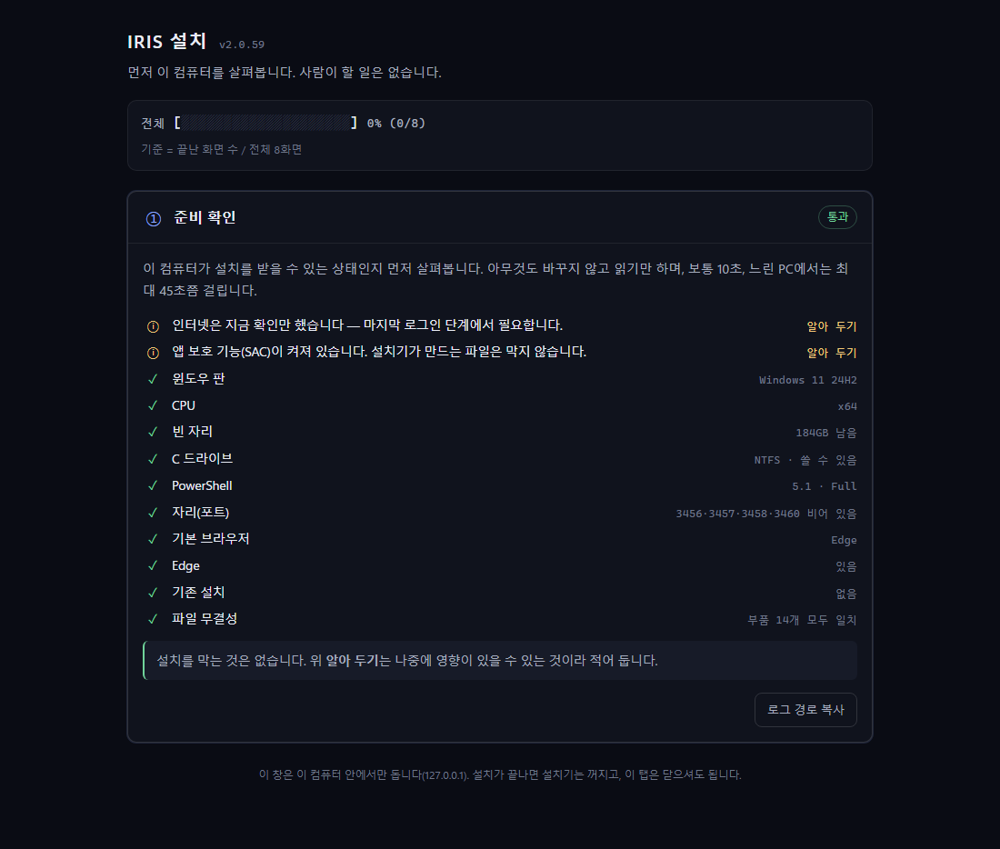
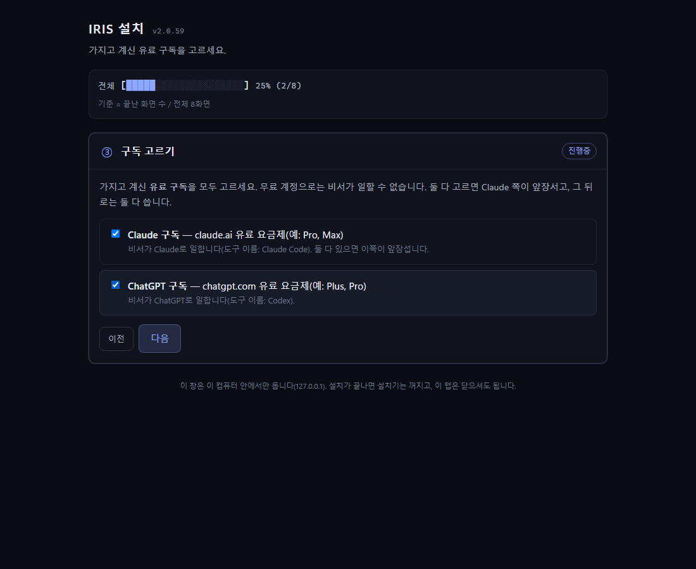
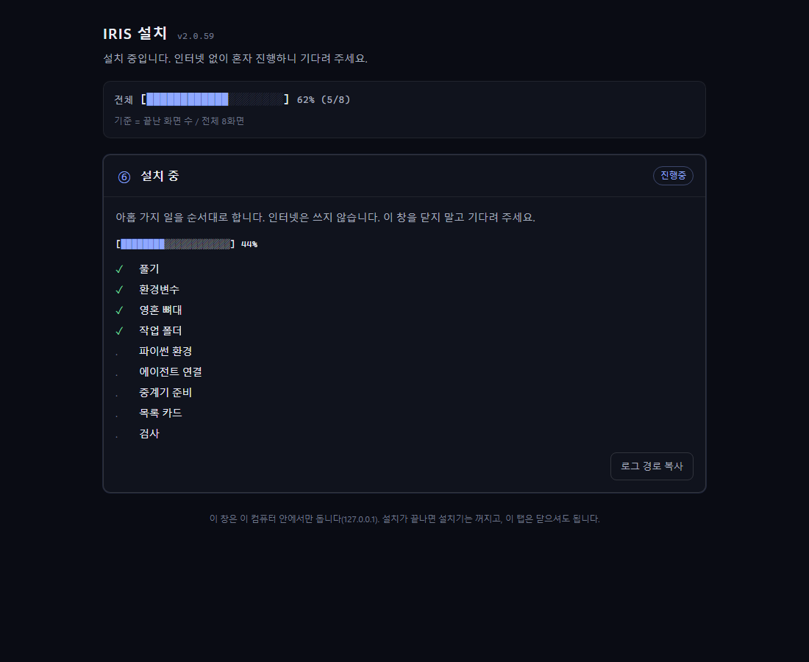
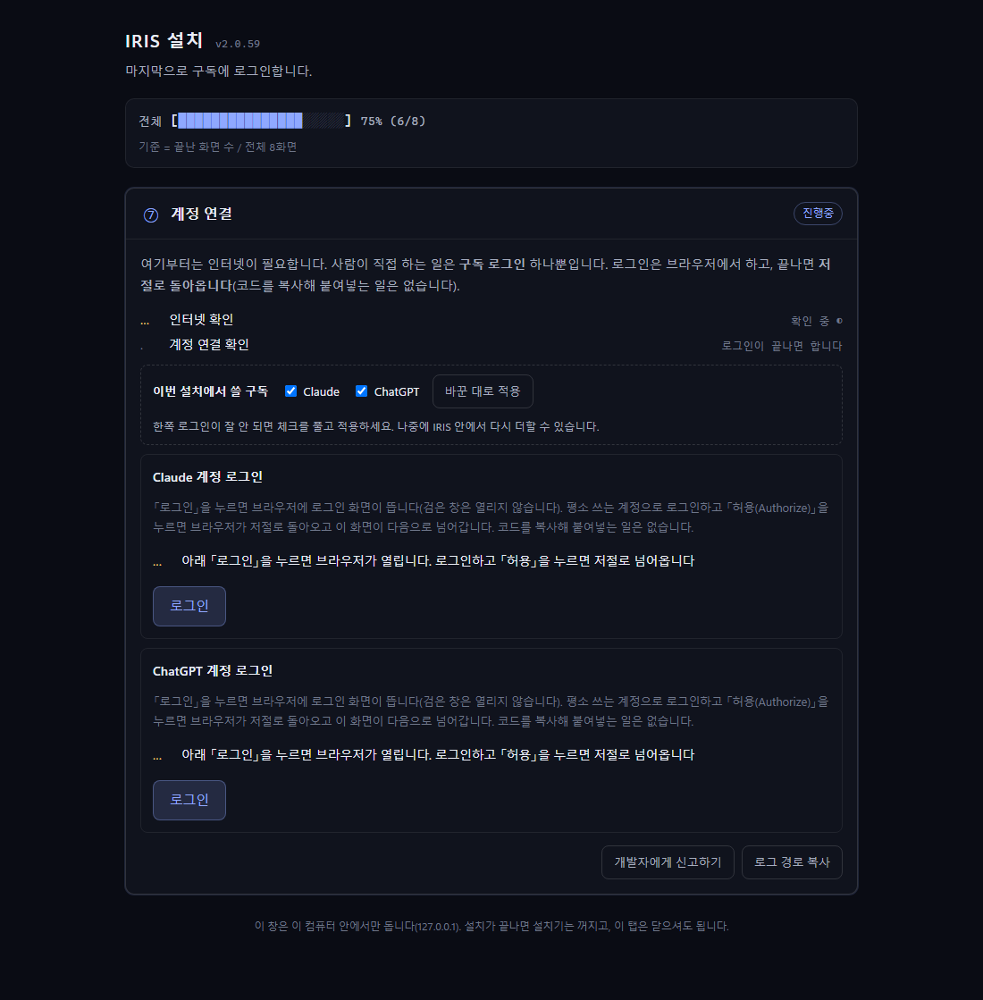
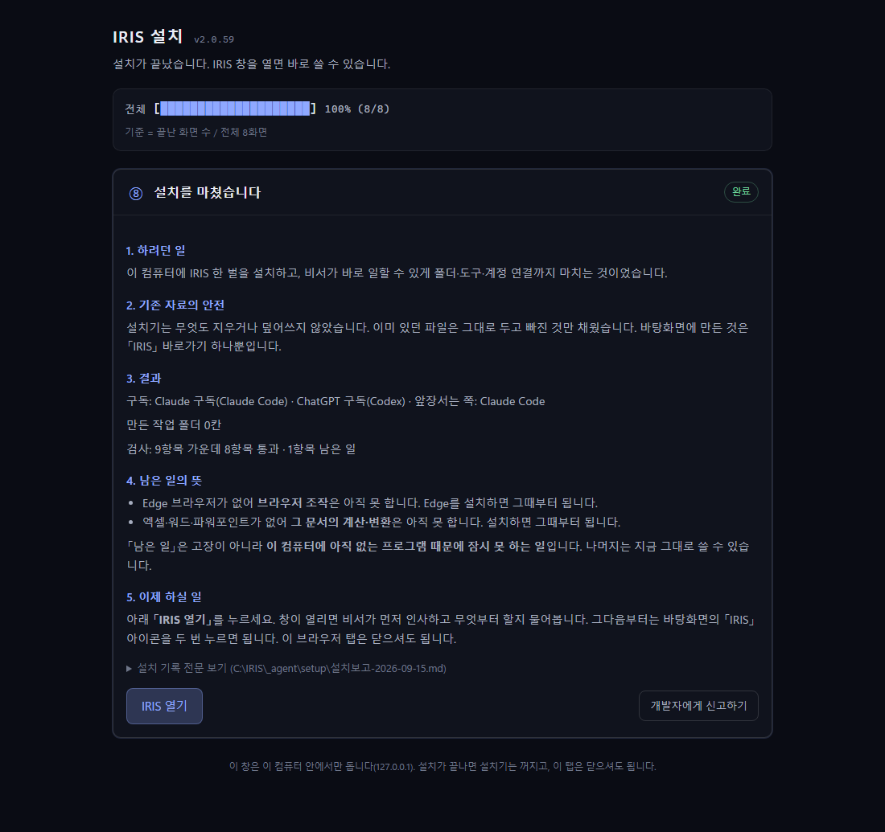

설치 안내
IRIS를 내려받아 설치하고, 새 판으로 바꾸고, 지우는 방법을 차례로 적었습니다. 설치하는 동안 사람이 정하는 것은 가진 구독 고르기와 로그인 둘뿐입니다. 큰 단추로 받는 안정판을 기준으로 썼고, 최신판에서 다른 점은 그 자리에 따로 적었습니다.
받기 — 내려받기와 압축 풀기
홈에서 zip을 내려받습니다. 압축을 풀기 전에 zip 파일을 오른쪽 클릭 → 속성 → 아래쪽 「차단 해제」에 체크 → 확인을 누르세요(윈도우가 인터넷에서 받은 파일에 붙이는 표식을 지우는 것으로, 건너뛰면 윈도우 11의 스마트 앱 컨트롤이 다음 단계를 막습니다 — 막히면 바로 아래 윈도우가 막을 때를 보세요). 그다음 아무 곳에나 압축을 풉니다.
실행 — IRIS-설치.cmd 파일 더블클릭
풀어 둔 폴더에서 IRIS-설치.cmd 파일을 마우스로 더블클릭합니다 — 명령 창을 열어 무언가를 칠 필요는 없습니다(이름 끝의 .cmd는 파일 종류일 뿐입니다). 검은 창이 잠깐 보였다가 브라우저에 설치 화면(127.0.0.1:3460)이 열립니다. 그다음부터는 가진 구독을 고르고 로그인하는 것 말고는 설치기가 알아서 진행합니다.
서명이 없는 파일이라 윈도우가 막을 때
IRIS 설치 파일은 코드 서명(개발사 인증서로 "이 파일은 누가 만들었다"를 윈도우에 증명하는 것)이 아직 없습니다. 그래서 윈도우가 "알 수 없는 앱"으로 보고 한 번 막을 수 있습니다. 파일 자체는 GitHub에 공개된 소스로 만든 것이고, 아래 SHA-256 값으로 받은 파일이 원본과 같은지 확인할 수 있습니다.
막혔을 때 순서 — 위에서부터 해 보고, 되면 멈춥니다
- 파란 창 "Windows의 PC 보호" (SmartScreen)「추가 정보」를 누르면 「실행」 단추가 나타납니다 → 실행. 이 스크립트는 동봉된 Node.js를 시작할 뿐입니다.창이 아예 안 뜨거나 "스마트 앱 컨트롤이 차단했습니다"라면 ↓
- 스마트 앱 컨트롤(SAC) 끄기 — 새 PC는 대개 켜져(또는 평가 모드) 있습니다설정 › 개인 정보 및 보안 › Windows 보안 › 앱 및 브라우저 컨트롤 › 스마트 앱 컨트롤 설정 › 「끄기」. 한 번 끄면 다시 켤 수 없습니다 — 윈도우를 새로 설치하지 않는 한. 켠 채로는 서명 없는 프로그램 대부분이 막힙니다. 끈 뒤
IRIS-설치.cmd를 다시 두 번 클릭합니다.그래도 아무 반응이 없으면 ↓ - 명령 창에서 직접 실행
- 압축을 푼 폴더를 엽니다.
- 주소 표시줄(폴더 경로가 적힌 칸)을 클릭해
cmd라고 치고 Enter → 그 폴더에서 검은 창(명령 프롬프트)이 열립니다. - 검은 창에 다음 한 줄을 붙여 넣고 Enter:
IRIS-설치.cmd - 몇 초 뒤 브라우저가 열리며 설치 화면이 나오면 성공. 검은 창은 스스로 닫힙니다.
- 알려 주기검은 창에 찍힌 글자를 복사해 의견 보내기로 알려 주세요(로그인 없이 보냅니다. 화면 캡처는 받지 않으니 글자로 적어 주세요). zip 뿌리의 「설치가 안 되면.txt」에 같은 안내가 있습니다.
받은 파일이 원본인지 확인 (선택)
PowerShell을 열고 zip이 있는 폴더에서 아래 명령을 실행합니다. 나온 값이 그 아래 값과 같으면 같은 파일입니다.
Get-FileHash .\IRIS-Setup_v2.0.59_2026-11-10.zip -Algorithm SHA256b115b0368d0097e94b3bfd045bb24b40470d8bcd70a3ba365afc0bb043b1dc15
설치 중 스마트 앱 컨트롤이 켜져 있으면
설치기의 준비 확인이 「앱 보호 기능(SAC)이 켜져 있습니다」라고 미리 알립니다. 그 상태로도 대개 설치는 되지만, 동봉한 파이썬 도구가 차단돼 설치가 파이썬 환경 단계에서 멈출 수 있습니다. 그러면 위 ②대로 끄고 「다시 시도」를 누르면 됩니다.
설치 화면
설치 화면은 준비 확인부터 완료까지 차례로 넘어가고, 위쪽 진행 막대가 어디까지 왔는지 보여 줍니다. 화면 번호는 ①~⑧이지만 ④ 작업 폴더 화면은 건너뛰므로 실제로 보는 화면은 일곱입니다. 사람이 정하는 것은 ③ 구독과 ⑦ 로그인 둘뿐이고 나머지는 설치기가 알아서 합니다. 인터넷은 ⑦에서만 씁니다.
① 준비 확인
윈도우 판, 64비트 CPU, C 드라이브 여유(3 GB), PowerShell, 포트, 기본 브라우저, 기존 설치, 받은 파일의 무결성을 자동으로 확인합니다. 아무것도 바꾸지 않고 읽기만 하며, 보통 10초, 느린 PC에서는 45초쯤 걸립니다. 막는 것이 있으면 무엇을 하면 되는지 그 자리에 적히고, 인터넷이나 스마트 앱 컨트롤처럼 나중에 영향이 있을 수 있는 것은 「알아 두기」로만 남깁니다. 통과하면 저절로 다음 화면으로 넘어갑니다.

② 설치 위치
IRIS는 항상 C:\IRIS 폴더 하나에 설치되며 위치를 묻지 않습니다 — 그 자리를 쓸 수 있는지만 확인하고 「다음」을 누릅니다. 바탕화면에는 「IRIS」 바로가기 하나만 만듭니다. 이미 IRIS가 설치된 PC라면 이 자리에 「새 판으로 업데이트」 화면이 대신 나옵니다(아래 업데이트).
③ 구독 고르기
가진 유료 구독을 모두 표시합니다: Claude, ChatGPT, 또는 둘 다. 무료 계정으로는 비서가 일할 수 없습니다. 둘 다면 Claude Code가 앞장서고 그 뒤로는 둘 다 씁니다. ChatGPT만 골랐다면 Codex가 앞장섭니다. 어느 쪽을 고르든 두 비서를 모두 설치하므로, 나중에 다른 구독 계정을 더하면 바로 연결됩니다. 여기서 고른 것은 ⑦ 계정 연결 화면에서 다시 바꿀 수 있습니다.

④ 작업 폴더 — 건너뜁니다
예전 판에는 여기서 직업을 골라 폴더를 미리 만드는 화면이 있었습니다. 지금은 건너뜁니다. 설치기는 IRIS 폴더 하나만 만들고, 그 안의 작업 폴더는 설치가 끝난 뒤 IRIS 창에서 비서가 여쭤 보며 함께 만듭니다(아래 설치 뒤 첫 대화).
⑤ 이대로 설치할까요
고른 구독과, 작업 폴더는 설치 뒤 인터뷰로 만든다는 안내를 보여 줍니다. 여기까지가 설치 전에 사람이 정하는 전부이며, 「이대로 설치 시작」을 누르면 다음부터는 설치기가 혼자 진행합니다.
⑥ 설치 중
인터넷 없이 아홉 가지 일을 순서대로 합니다 — 동봉된 프로그램 풀기, 환경변수, 기본 폴더와 지침, 작업 폴더, 파이썬 환경, 에이전트 연결, 중계기 준비, 목록 카드, 검사. 진행 막대에 지금 하는 일이 표시되고, 중간에 멈추면 오류 코드와 까닭이 그 자리에 적힙니다. 「다시 시도」는 그 단계부터 다시 하며 이미 만든 파일을 지우지 않습니다. 몇 분이 걸리니 창을 닫지 말고 기다려 주세요.

⑦ 계정 연결
여기부터 인터넷을 씁니다. 사람이 직접 하는 일은 구독 로그인 하나뿐이고, 세 가지가 차례로 일어납니다.
- 연결 확인 — 필요한 주소에 닿는지 봅니다. 막힌 주소가 있으면 이름을 알려 주고 멈춥니다. 학교·회사 인터넷이 막는 경우 휴대폰 핫스팟에 연결하고 「다시 확인」을 누르면 여기서부터 이어집니다.
- Claude Code 내려받기 — 무엇을 골랐든 두 비서를 모두 설치합니다. 받지 못하면 「Claude Code 다시 받기」 단추가 나옵니다. ChatGPT만 고른 경우에는 받지 못해도 경고만 하고 넘어갑니다.
- 로그인 — 고른 구독마다 「로그인」을 누르면 브라우저에 그 계정의 로그인 화면이 뜹니다(검은 창은 열리지 않습니다). 평소 쓰는 계정으로 로그인하고 「허용(Authorize)」을 누르면 브라우저가 저절로 돌아오고 화면이 다음으로 넘어갑니다. 코드를 복사해 붙여 넣는 일은 없습니다. 둘 다 골랐다면 Claude, ChatGPT 순서입니다.
로그인이 끝나면 계정을 이 컴퓨터로 옮겨 담고(보통 몇 초) 계정 중계기가 켜집니다. 한쪽 구독의 로그인이 계속 안 되면 화면의 「이번 설치에서 쓸 구독」에서 그 구독의 체크를 풀고 「바꾼 대로 적용」을 누르세요 — 남은 구독만으로 설치를 마치고, 뺀 구독은 나중에 IRIS 안에서 다시 더할 수 있습니다.

⑧ 완료
하려던 일, 기존 자료의 안전, 결과, 남은 일의 뜻, 이제 할 일 — 다섯 항목의 보고를 보여 줍니다(같은 내용이 C:\IRIS\_agent\setup\설치보고-*.md에도 남습니다). 「남은 일」은 고장이 아니라 이 PC에 아직 없는 프로그램(예: Edge, 엑셀·워드) 때문에 잠시 못 하는 기능입니다. 「IRIS 열기」를 누르면 IRIS 창이 뜹니다. 창이 열린 뒤 메신저 로그인 안내 카드가 한 번 뜨는데, 「메신저 열기」로 지금 하거나 「나중에」로 넘겨도 됩니다.최신판에서는 메신저가 함께 설치되지 않아 이 카드가 뜨지 않습니다. 메신저가 필요하면 IRIS 창의 설정 → 확장 모듈에서 설치합니다.

설치 뒤 첫 대화 — 작업 폴더를 함께 만듭니다
IRIS 창을 처음 열면 비서가 짧게 인사한 뒤 바로 질문을 시작합니다. 어떤 자리(역할)에서 어떤 일을 하시는지 한 번에 하나씩 여쭙고, 답을 모아 만들 폴더를 표로 보여 드립니다. "이대로 만들까요?"에 "네"라고 하신 뒤에만 폴더를 만듭니다. 보통 10~15분이 걸리고, "간단히"라고 하시면 질문을 줄입니다. 중간에 창을 닫아도 다음에 이어서 합니다.
업데이트
판은 두 갈래로 나옵니다. 어느 길로 갱신하든 자료·설정·로그인은 그대로 둡니다.
- 안정판 — 먼저 써 보고 시험을 마친 판입니다. 홈의 큰 단추와 IRIS 창의 「업데이트」가 이 판을 받습니다.
- 최신판 — 가장 새로 나왔고 아직 시험 중인 판입니다. 홈의 「최신판」 단추에서만 받을 수 있고, IRIS 창의 「업데이트」는 이 판을 받지 않습니다.
- IRIS 창에서 — 설정 → 업데이트에 새 안정판이 표시되면 「업데이트」 단추를 누르세요. 내려받기와 검사가 끝나면 확인 카드가 뜹니다. 확인하면 열려 있던 세션이 모두 끝나고 새 판이 적용된 뒤, 창이 다시 열리며 그 세션들이 자동으로 이어집니다.
- 새 zip으로 — 홈에서 새 zip을 받아
IRIS-설치.cmd를 실행해도 됩니다. 이미 설치된 PC를 알아보고 「새 판으로 업데이트」 화면을 보이며, 「업데이트 시작」을 누르면 IRIS 프로그램을 닫고 바뀐 부품만 갈아 끼운 뒤 IRIS 창을 다시 엽니다. 최신판을 써 보려면 이 길로 받습니다. 창의 업데이트 확인이 막혀 새 판이 안 보이는 인터넷에서도 이 길이 확실합니다.
1.x를 쓰고 계셨다면: 2.0은 설치 방식이 바뀌어 새로 설치합니다. 기존 자료는 그대로 두고, 홈에서 새 zip을 받아 이 쪽의 순서(받기·실행 → 설치 화면)를 그대로 따르세요.
막혔을 때
설치가 안 되면 — 「차단 해제」를 건너뛴 경우의 자세한 해결법
순서대로 짚어 보려면 위 「서명이 없는 파일이라 윈도우가 막을 때」가 먼저입니다. 아래는 zip 안 「설치가 안 되면.txt」와 같은 내용입니다.
IRIS-설치.cmd 를 두 번 눌렀는데 아무 일도 일어나지 않거나 "이 앱은 보호를 위해 차단되었습니다" 같은 창이 뜨는 경우입니다. 원인은 윈도의 스마트 앱 컨트롤(Smart App Control)입니다. 인터넷에서 받은 파일에 "웹에서 왔음" 표식이 붙는데, 이 기능이 켜져 있으면 그 표식이 붙은 실행 파일을 실행 단추도 없이 막습니다. 컴퓨터나 IRIS가 고장 난 것이 아닙니다. 아래 둘 중 하나만 하면 됩니다.
[방법 ㉮] 차단 해제하고 다시 풀기 (권장)
- 내려받은 zip 파일을 마우스 오른쪽 단추로 누릅니다.
- 맨 아래 "속성"을 누릅니다.
- 창 아래쪽 "보안: 이 파일은 다른 컴퓨터에서 왔으며..." 옆 「차단 해제」 네모 칸을 체크합니다. (이 문구가 안 보이면 이미 해제된 것입니다. 방법 ㉯로 가세요.)
- "확인"을 누릅니다.
- 먼저 풀어 둔 폴더는 지우고, zip을 다시 풉니다.
- IRIS-설치.cmd 를 다시 두 번 누릅니다.
[방법 ㉯] 탐색기 주소창에서 실행하기
- zip을 푼 폴더를 탐색기에서 엽니다.
- 위쪽 주소창(폴더 경로가 적힌 칸)을 한 번 누릅니다. 경로 글자가 파랗게 선택됩니다.
- 그 자리에 아래를 그대로 쳐 넣고 Enter 를 누릅니다.
cmd /c IRIS-설치.cmd - 검은 창이 뜨고 설치가 시작됩니다.
설치기가 만드는 파일에는 이 표식이 붙지 않습니다. 그래서 한 번만 넘어가면 그 다음 단계부터는 이 문제가 다시 생기지 않습니다.
그래도 안 될 때
- 설치 기록(로그)이 아래에 남아 있습니다. 파일 탐색기 주소창에 아래를 붙여 넣으면 폴더가 열립니다.
%LOCALAPPDATA%\IRIS-Installer\bootstrap.log - 그림과 함께 설명한 안내는 홈페이지에 있습니다.
https://iris-workspace.com/install.html#sac - 도움을 요청할 때 위 로그 파일을 함께 보내 주시면 어디서 막혔는지 바로 알 수 있습니다.
로그인 화면이 뜨지 않습니다
먼저 화면 맨 아래 작업 표시줄에 새 브라우저 창이 떠 있는지 보세요. 로그인 칸의 「브라우저가 열리지 않았으면 여기를 누르세요」 링크를 눌러도 됩니다. 20초가 지나도 없으면 「다시 로그인」을 누릅니다 — 기다릴 필요 없이 몇 번이고 눌러도 안전합니다. 탭이 두 개 열렸으면 하나에서만 진행하세요. 학교·회사 인터넷에서 계속 안 되면 휴대폰 핫스팟으로 바꿔 다시 해 보세요.
Claude 「로그인」 단추가 눌리지 않습니다
Claude Code를 아직 내려받는 중이거나 받지 못한 것입니다. 내려받기가 끝나면 단추가 켜집니다. 받지 못했다면 그 칸의 「Claude Code 다시 받기」를 누르세요. 학교·회사 인터넷이 내려받기를 막으면 휴대폰 핫스팟에 연결한 뒤 다시 받으면 됩니다.
다른 문제가 생겼습니다
설치기가 멈춘 화면(⑥ 설치 중·⑦ 계정 연결·업데이트·완료)에는 「개발자에게 신고하기」 단추가 있습니다. 누르면 멈춘 단계·오류 코드·진단·로그 끝부분이 윈도 계정 이름을 가린 채 개발자에게 전달됩니다(보내기 전에 내용을 볼 수 있습니다). 설치기를 이미 닫았다면 의견 보내기로 알려 주세요. 기록 파일은 C:\IRIS\_agent\setup\installer.log와 %LOCALAPPDATA%\IRIS-Installer\server.log에 있습니다. 그래도 안 되면 아래 깨끗이 지우고 새로 설치를 보세요.
그래도 안 되면 — 깨끗이 지우고 새로 설치
업데이트도, 위 방법도 안 될 때의 마지막 방법입니다. IRIS가 이미 설치된 PC는 보통 이 단계가 필요 없습니다 — 새 zip을 실행하면 「업데이트 시작」 단추가 나오고 자료·설정·로그인은 그대로 남습니다. 지우기만 하려는 것이라면 아래 지우기가 먼저입니다. 여기는 그것마저 막힐 때의 순서입니다. C:\IRIS 안에 만든 문서가 있으면 먼저 다른 곳에 옮겨 두세요 — ③에서 폴더째 지워집니다.
- ① PC를 다시 시작합니다뒤에 남아 있는 IRIS 창·설치기·중계기가 전부 꺼집니다. 이 단계를 건너뛰면 지우기가 「접근이 거부되었습니다」로 막히거나, 새 설치기가 옛 설치기 화면을 열어 줍니다.
- ② PowerShell을 관리자 권한으로 엽니다시작 단추를 오른쪽 클릭 → 「터미널(관리자)」 또는 「Windows PowerShell(관리자)」 → 파란(또는 검은) 창이 뜹니다.
- ③ 아래 네 줄을 통째로 복사해 붙여 넣고 EnterIRIS 폴더, 설치기 기록 폴더, 바탕화면 바로가기를 지웁니다. 없는 항목은 조용히 건너뜁니다. 마지막 줄이
FalseFalse로 나오면 다 지워진 것입니다.True가 나오면 ①을 다시 하세요(무언가 아직 실행 중).Remove-Item -LiteralPath 'C:\IRIS' -Recurse -Force -ErrorAction SilentlyContinue Remove-Item -LiteralPath "$env:LOCALAPPDATA\IRIS-Installer" -Recurse -Force -ErrorAction SilentlyContinue Remove-Item -LiteralPath ([Environment]::GetFolderPath('Desktop') + '\IRIS.lnk') -Force -ErrorAction SilentlyContinue Test-Path 'C:\IRIS'; Test-Path "$env:LOCALAPPDATA\IRIS-Installer" - ④ (선택) IRIS를 완전히 떠날 때만 — 환경변수 지우기다시 설치할 계획이면 이 줄은 필요 없습니다(새 설치기가 덮어씁니다). IRIS를 완전히 지우는 경우에만 붙여 넣으세요. 설치기가 등록해 둔 사용자 환경변수 4개를 지웁니다.
foreach ($n in 'CLAUDE_CONFIG_DIR','CODEX_HOME','ANTHROPIC_BASE_URL','TEAMCLAUDE_CONFIG') { [Environment]::SetEnvironmentVariable($n, $null, 'User') } - ⑤ 홈에서 zip을 받아 처음부터 설치이 쪽의 받기·실행 → 설치 화면 순서 그대로입니다. 구독 로그인을 한 번 다시 합니다. 설치기 화면 위쪽의 판 표시가 받은 zip의 판과 같은지 확인하세요 — 다르면 ①(다시 시작)부터 다시.
지우기
받은 zip을 푼 폴더의 IRIS-삭제.cmd를 두 번 클릭하면 한국어 창이 떠서 무엇을 지우는지 보여 주고, 고른 대로 지웁니다. zip을 이미 지웠다면 C:\IRIS\_agent\setup\installer\installer 안에도 같은 파일이 있습니다. 옛 판으로 설치한 PC도 지금 zip의 이 파일로 지울 수 있습니다.
- ① 무엇을 남길지 고릅니다창에 지울 IRIS 폴더와 지워지는 것이 나옵니다. 둘 중 하나를 고릅니다. 「내 작업은 남기기(추천)」는 IRIS가 깐 것만 지우고, 내가 만든 폴더와 파일은
C:\IRIS-보관-날짜폴더로 옮겨 둡니다. 「전부 지우기」는 내가 만든 자료까지 통째로 지우며, 되돌릴 수 없어서 한 번 더 확인합니다. - ② 「삭제 시작」을 누릅니다켜져 있는 IRIS 프로그램을 스스로 끄고 여덟 가지를 차례로 합니다 — IRIS 프로그램 닫기, 로그온 자동 시작 빼기, 환경변수 되돌리기, PATH 설정 빼기, 바탕화면 바로가기 지우기, 내 작업 옮기기, IRIS 폴더 지우기, 설치기 작업 폴더 지우기. 창을 닫지 말고 기다려 주세요.
- ③ 결과를 확인합니다다 지웠으면 내 작업을 옮겨 둔 보관 폴더의 위치를 알려 줍니다. 일부가 남았다면 그 파일을 붙잡고 있는 프로그램 이름을 알려 주니, 그 프로그램을 닫고 「다시 시도」를 누르세요. 그래도 남으면 PC를 다시 시작한 뒤
IRIS-삭제.cmd를 한 번 더 실행합니다.
지워지는 것과 남는 것
- 항상 지워집니다 — IRIS 폴더 안의 프로그램·설정·지침, 바탕화면 「IRIS」 바로가기, 사용자 환경변수와 PATH 설정, 로그온 자동 시작. 설치 전에 쓰던 환경변수 값은 되돌립니다.
- 함께 지워지니 미리 알아 두세요 — 저장된 API 키, 구독 로그인 정보, 비서의 기억과 대화 기록. 「내 작업은 남기기」를 골라도 지워집니다.
- 남길 수 있습니다 — 내가 만든 폴더와 파일. 「내 작업은 남기기」를 고르면
C:\IRIS-보관-날짜로 옮겨집니다. - PC에서는 안 됩니다 — 구독(Claude·ChatGPT) 해지. claude.ai·chatgpt.com의 계정 설정에서 따로 하세요.
- 안전 장치 — 설치 기록(영수증)이 있는 IRIS 폴더만 지웁니다. 그 기록이 없는 폴더는 건드리지 않습니다.
지운 뒤에는 열려 있던 명령 창을 닫고 새로 여세요(바뀐 설정은 새 창부터 적용됩니다). 다시 설치하려면 홈에서 zip을 받아 처음부터 하면 됩니다. IRIS-삭제.cmd가 막히면 위 깨끗이 지우고 새로 설치의 ①~④를 따르세요.최신판에서는 시작 메뉴에 생긴 IRIS 바로가기도 함께 지웁니다.